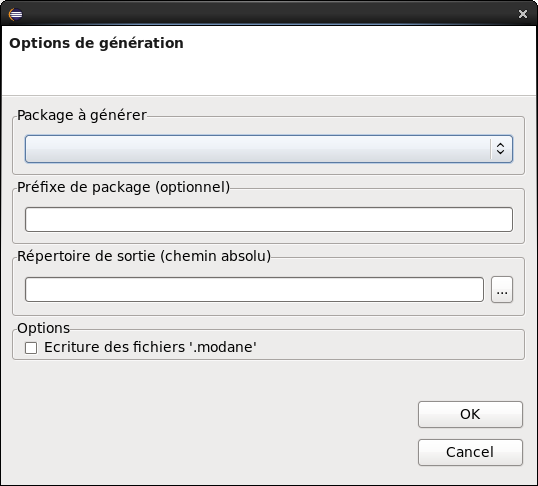

Depuis
Magicdraw, le modèle doit être exporté au format
'Eclipse UML2 (V3.x)' depuis le menu 'File > Export'. Il faut
choisir un répertoire d'export appartenant à un de vos
projets Eclipse.
Ensuite, dans Eclipse, il faut sélectionner
le fichier de modèle, avec l'extension '.uml', faire un clic
droit et sélectionner l'item 'Générer le code
C++ pour Arcane'.
La fenêtre de dialogue ci-dessus apparait
alors. Les options sont :
Package à générer : le package du modèle pour lequel vous voulez générer les sources.
Préfixe de package : parfois le package généré est un sous-ensemble (module Magicdraw) d'un modèle global et il doit s'intégrer dans une arborescence lors de la génération. Par exemple, le package 'matrix', doit être généré dans le package 'algebra/matrix'. Dans ce cas, le préfixe de package est 'algebra'.
Répertoire de sortie : c'est la racine du répertoire de génération. C'est souvent le répertoire 'src' du projet.
Ecriture des fichiers '.modane' : cette option permet de générer les fichiers contenant le modèle au format texte, dans la syntaxe Modane.
Pour mémoriser les options que vous avez sélectionnées, un fichier de même nom que le modèle avec l'extension '.properties' est créé. Par exemple, si votre modèle est dans le fichier 'Mydir/Mymodel.uml', un fichier 'Mydir/Mymodel.properties' est créé. Ce fichier est éditable et ses options peuvent être modifiées manuellement.